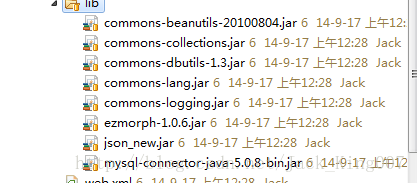
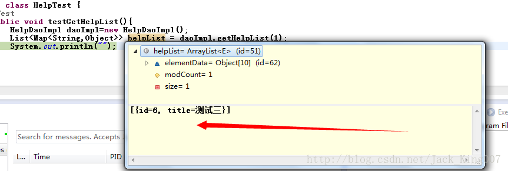

安卓服务器端之二服务器的建立
以前总是不知道怎么建立服务器，安卓没有服务器是等于一具尸体，有了服务器就有了灵魂，就成了一个活人，能跟我们对话。
正话：以前不知道为什么要学javaee，我觉得应该服务器端有关，现在才知道怎么建立服务器跟安卓端数据交互，是我智商太低了，领悟的太慢了么。
1.建立一个dynamic web project，选择tomcat服务
2.建立一个servlet
相信学过javaee 是知道一个单独servlet就可以处理数据的交互的 连接为/help
其实我项目中有几个工具架包 连通数据库 数据库查询的 dbUtils 都是操作数据库，其他的都是操作json

先看一个bean
package com.xiaoxin.dao;
import java.sql.SQLException;
import java.util.List;
import java.util.Map;
import org.apache.commons.dbutils.QueryRunner;
import org.apache.commons.dbutils.handlers.MapListHandler;
import com.xiaoxin.utils.DataSourceManager;
/**
* 帮助处理
* @author Administrator
*
*/
public class HelpDaoImpl {
private QueryRunner runner=new QueryRunner(DataSourceManager.getDataSource());
/**
* 获取帮助列表
* @param version
*/
public List<Map<String, Object>> getHelpList(int version){
//dbutils
//配置信息
//查询-QueryRunnnn r
String sql="SELECT id,title FROM help WHERE state=1 and version>?";
try {
// MapListHandler 返回一个map集合
return runner.query(sql, new MapListHandler(), version);
} catch (SQLException e) {
// TODO Auto-generated catch block
e.printStackTrace();
}
return null;
}
}
然后一个Test 看下数据
package com.xiaoxin.test;
import java.util.List;
import java.util.Map;
import org.junit.Test;
import com.xiaoxin.dao.HelpDaoImpl;
public class HelpTest {
@Test
public void testGetHelpList(){
HelpDaoImpl daoImpl=new HelpDaoImpl();
List<Map<String,Object>> helpList = daoImpl.getHelpList(1);
System.out.println("");
}
}
查询结果

这说明第一步跟数据库是成功的连接了，并查询出了数据
然后通过servlet进行操作
package com.xiaoxin.servlet;
import java.io.IOException;
import java.util.HashMap;
import java.util.List;
import java.util.Map;
import javax.servlet.ServletException;
import javax.servlet.http.HttpServlet;
import javax.servlet.http.HttpServletRequest;
import javax.servlet.http.HttpServletResponse;
import net.sf.json.JSONObject;
import org.apache.commons.collections.map.HashedMap;
import com.xiaoxin.dao.HelpDaoImpl;
import com.xiaoxin.utils.CommonUtil;
/**
* Servlet implementation class HelpServlet
*/
public class HelpServlet extends HttpServlet {
private static final long serialVersionUID = 1L;
/**
* @see HttpServlet#doGet(HttpServletRequest request, HttpServletResponse response)
*/
protected void doGet(HttpServletRequest request, HttpServletResponse response) throws ServletException, IOException {
System.out.println("测试");
data(request,response);
}
private void data(HttpServletRequest request, HttpServletResponse response) {
//数据库查询
int version=0;
try{
version = Integer.parseInt(request.getParameter("version"));
}catch(Exception e){
}
//数据库操作
HelpDaoImpl daoImpl=new HelpDaoImpl();
List<Map<String,Object>> helpList = daoImpl.getHelpList(version);
Map<String,Object>data=new HashMap<String,Object>();
data.put("response", "help");
data.put("version", "12");
data.put("helpList", helpList);
// JSONObject object=JSONObject.fromObject(data);
// System.out.println(object.toString());
// response.getWriter().write(object.toString());
// response.getWriter().flush();<span style="white-space:pre"> </span>//工具类 等于上面四句话
CommonUtil.renderJson(response, data);
}
/**
* @see HttpServlet#doPost(HttpServletRequest request, HttpServletResponse response)
*/
protected void doPost(HttpServletRequest request, HttpServletResponse response) throws ServletException, IOException {
// TODO Auto-generated method stub
}
}
源码里还有一个很好理解的例子